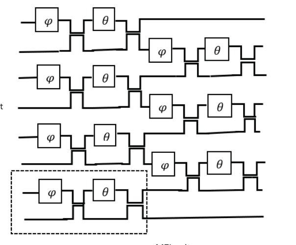
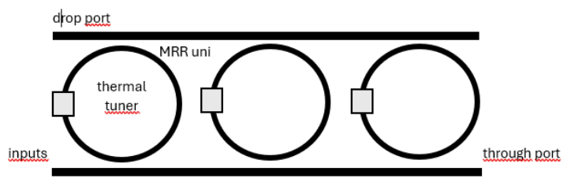
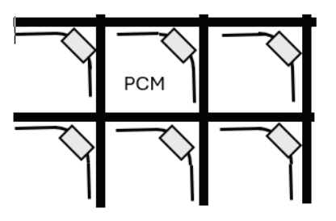
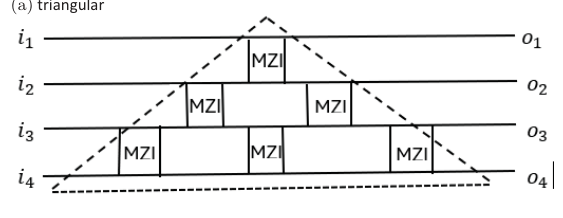
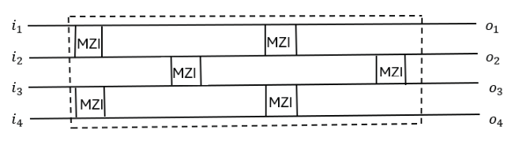
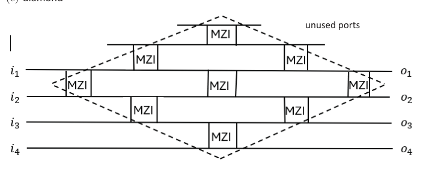
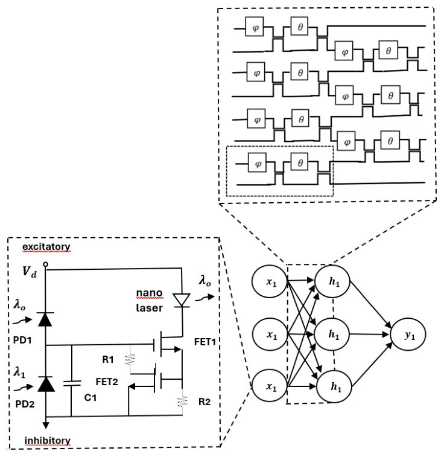
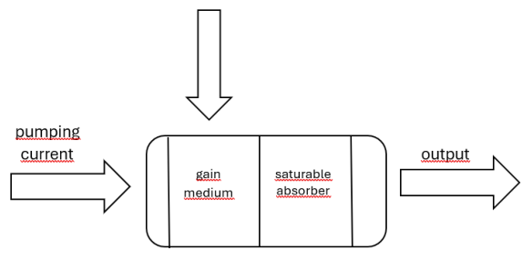
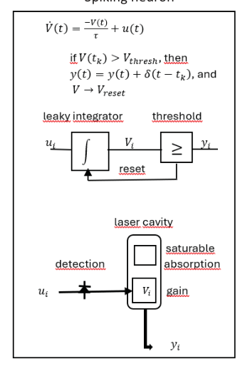
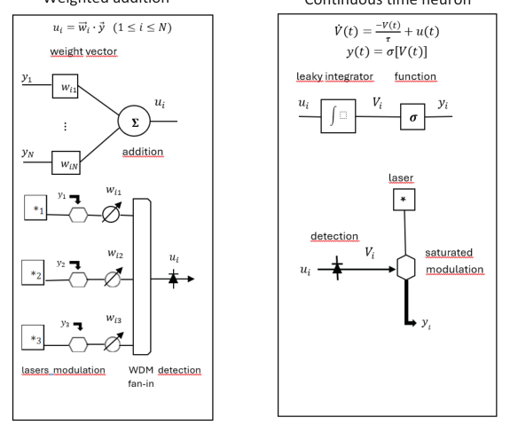

Chương 14 — Triển vọng công nghệ của hệ thống mô phỏng thần kinh quang tử
Chương 14
Triển vọng công nghệ của các hệ thống
mô phỏng thần kinh quang tử
Như một giải pháp thay thế cho phần cứng của các hệ thống mô phỏng thần kinh trên nền tảng điện tử (memristive), các hệ thống mô phỏng thần kinh hiện đang được phát triển trên nền tảng quang tử. Thay vì electron, giờ đây photon, tức là ánh sáng, được sử dụng để truyền tải thông tin. Công nghệ này vẫn đang ở giai đoạn sơ khai, nhưng hứa hẹn những lợi thế to lớn so với các mạch kỹ thuật điện về mặt năng lượng và tốc độ truyền dữ liệu thông tin. Sự phát triển của các vật liệu nano mới song hành cùng các công nghệ tính toán tương lai. Chương này đề xuất một sự chuẩn hóa các công nghệ quang tử khác nhau, vốn là điều kiện tiên quyết cho việc sản xuất công nghiệp và ứng dụng các chip mô phỏng thần kinh quang tử. Photon cũng có thể được hiểu như các hệ lượng tử và qua đó mở ra mối liên hệ với tính toán lượng tử. Cuối cùng, các hệ lượng tử mô phỏng thần kinh quang tử, những “bộ não ánh sáng” bán nhân tạo, đang nổi lên như một phần cứng tương lai của trí tuệ nhân tạo.
Khởi nguồn của các hệ thống mô phỏng thần kinh quang tử
Tính toán mô phỏng thần kinh đã bắt đầu loại bỏ nút thắt cổ chai giữa bộ xử lý và bộ nhớ của tính toán Turing–von Neumann truyền thống. Phần cứng điện tử của Loihi của Intel, TrueNorth của IBM, máy SpiNNaker của Manchester, v.v., phát triển hiệu quả năng lượng tốt hơn nhiều so với tính toán Turing–von Neumann thông thường. Tuy nhiên, các giải pháp điện tử bao gồm các dây dẫn điện dài với giá trị điện dung lớn và mức tiêu thụ năng lượng kết nối cao. Ngay cả tính toán mô phỏng thần kinh điện tử nano cũng gặp phải những thách thức về truyền thông. Do đó, vào những năm 1980, mạng nơ-ron quang học đã trở nên
355
356 Trí tuệ nhân tạo của các hệ thống mô phỏng thần kinh thú vị như một dạng tính toán giống não bộ song song ồ ạt ở tốc độ ánh sáng. Nhưng vào thời điểm đó, tính toán mô phỏng thần kinh quang học đã sớm bị từ bỏ do thiếu hụt kỹ thuật về các linh kiện thực tế và kiến thức chưa đầy đủ về các mạng nơ-ron phức tạp (Psaltis và Athale, 1986, 2016; Paek và Psaltis, 1987; Psaltis et al., 1988; Brady et al., 1988).
Trên nền tảng của những đột phá kỹ thuật gần đây, tính toán mô phỏng thần kinh quang tử hứa hẹn sẽ trở thành một hệ hình tính toán mới khả thi khắc phục những hạn chế của các giải pháp điện tử (Argyris, 2022). Trước hết, đó là thành công to lớn của các mạng nơ-ron lớn với học sâu. Hơn nữa, tốc độ gia tăng tích hợp linh kiện trong quang tử học silic nhanh gấp đôi so với tích hợp điện tử theo định luật Moore. Các giới hạn của định luật Moore đã trở nên rõ ràng (Waldrop, 2016). Do đó, phần cứng mô phỏng thần kinh điện tử không thể duy trì được sự gia tăng theo cấp số nhân của việc xử lý dữ liệu.
Các thế hệ mạng nơ-ron
Sự phát triển của mạng nơ-ron được phân loại thành ba thế hệ xét theo cách xử lý thông tin thần kinh của chúng (Maass, 1997):
(1) Ở thế hệ thứ nhất, các nơ-ron tuân theo một ngưỡng với các đầu ra giá trị nhị phân là 1 khi điện thế hoạt động vượt quá một ngưỡng cố định và 0 trong trường hợp ngược lại. (2) Ở thế hệ thứ hai, một nơ-ron hoạt động với một hàm kích hoạt trơn liên tục (ví dụ: đơn vị sigmoid logistic hoặc đơn vị tuyến tính chỉnh lưu (ReLU)) để xác định một tập hợp liên tục các đầu ra giá trị thực. (3) Ở thế hệ thứ ba, các nơ-ron xung như đơn vị tích hợp-và-phát có rò rỉ (LIF) được sử dụng, thể hiện các đầu ra tất-cả-hoặc-không-có-gì để đáp ứng với các xung đầu vào (Roy et al., 2019).
Các mạng nơ-ron sinh học là những hệ thống phức tạp gồm các nơ-ron được kết nối với hàng nghìn nơ-ron khác. Chúng được kết nối thông qua hàng nghìn synap, sợi nhánh và sợi trục, vốn có kích thước
Triển vọng công nghệ của các hệ thống mô phỏng thần kinh quang tử 357
cực kỳ nhỏ ở quy mô nano. Do đó, về mặt kỹ thuật rất khó để xây dựng các mức độ kết nối tương đương. Các trừu tượng hóa toán học rất hữu ích để hiện thực hóa các hiệu ứng thần kinh trong các mạng kỹ thuật.
Từ synap memristive đến synap quang tử
Máy tính mô phỏng thần kinh điện tử bao gồm các thanh chéo điện tử với các synap memristive tại mỗi điểm chéo và các nơ-ron điện tử ở mỗi đầu. Mạng nơ-ron quang tử (PNN) là các lưới synap quang tử gồm các bộ ghép quang tử giữa các nơ-ron quang tử và quang điện tử (Prucnal et al., 2017). Trong khi các kết nối synap sinh học trực tiếp làm thay đổi các giá trị trọng số tương ứng, các hệ số ghép nối synap quang tử lại ảnh hưởng đến các giá trị ma trận trọng số một cách tập thể. Các bộ nhân ma trận quang tử ghép ánh sáng từ một tập hợp N cổng đầu vào tới một tập hợp M cổng đầu ra theo một ma trận trọng số unita U. Lượng ánh sáng được ghép từ một đầu vào tới một đầu ra được xác định bởi các phần tử quang tử có thể tái cấu hình mô phỏng synap quang học. Việc thao tác các tính chất vật liệu giúp việc tái cấu hình các phần tử này trở nên khả thi.
Chiết suất là một tính chất như vậy của vật liệu. Nó có thể được thay đổi bởi các hiệu ứng nhiệt-quang, điện-quang, chuyển pha hoặc quang điện tử. Nhờ sự truyền qua một vật liệu, các thao tác này có thể điều chỉnh độ dài quang học và theo cách này làm thay đổi độ dịch pha của tín hiệu. Độ biến thiên pha tín hiệu Δφ tỷ lệ thuận với độ biến thiên chiết suất Δn theo chiều dài L của vật liệu và bước sóng trong không gian tự do λ0 của tín hiệu (El Srouji et al., 2022, 7.051101-9):
Δφ = 2πL
Δn.
λ0
Các hiệu ứng nhiệt-quang liên quan đến sự thay đổi chiết suất bởi nhiệt độ của ống dẫn sóng theo các hệ số nhiệt-quang của vật liệu tại một nhiệt độ và bước sóng nhất định. Các hệ số nhiệt-quang phụ thuộc phi tuyến vào bước sóng và nhiệt độ.
358 Trí tuệ nhân tạo của các hệ thống mô phỏng thần kinh
Sự thay đổi điện-quang của chiết suất đòi hỏi các vật liệu có điện trường đáng kể. Mối quan hệ giữa điện trường và sự thay đổi chiết suất của vật liệu đối với hiệu ứng điện-quang phức tạp hơn so với hiệu ứng nhiệt-quang. Hiệu ứng quang-ion tương tự như hiệu ứng điện-quang.
Các vật liệu chuyển pha quang học (PCM) tạo ra sự chuyển pha từ trạng thái vật liệu này sang trạng thái khác, ví dụ sự chuyển đổi từ cấu trúc tinh thể sang vô định hình và ngược lại bằng cách gia nhiệt nhanh lên nhiệt độ cao rồi làm nguội so với gia nhiệt chậm và làm nguội chậm. Sự thay đổi chiết suất cũng có thể được sử dụng để điều biến các hệ số ghép nối của các bộ ghép định hướng và hai chiều.
Giao thoa kế Mach–Zehnder (MZI) là các cặp ghép quang tử có thể tái cấu hình 2 × 2 sử dụng hai cặp bộ dịch pha và các bộ ghép hai chiều để triển khai một ma trận trọng số unita 2 × 2 U. Trong Hình 1, một MZI được chỉ thị trong hình chữ nhật nét đứt. Sự ghép nối được minh họa trong một bộ ghép hai nhánh từ một sóng tới đơn lẻ ở một

đầu vào các đầu ra
Đơn vị MZI
Hình 1. Kết nối synap bằng lưới MZI quang tử (vẽ lại theo El Sroushi et al., 2022, Hình 7(b)).
Triển vọng công nghệ của các hệ thống mô phỏng thần kinh quang tử 359
nhánh tới hai nhánh đầu ra. Vector đầu vào ⃗A tương ứng với các biên độ trường tới (được chuẩn hóa). Khi đó, các biên độ trường (được chuẩn hóa) tại đầu ra được cho bởi ⃗B = U⃗A. Cặp bộ dịch pha có thể được bố trí trên bất kỳ hai nhánh nào của MZI thông qua cấu hình ở Hình 1. Đối với các đầu vào (bộ ghép 50:50 hoàn hảo) và hai bộ dịch pha ϕ và θ, các biên độ đầu ra có thể được xác định bằng phép nhân ma trận unita ⃗
⃗ eiϕ sin(θ) cos(θ)
B =
A.
eiϕ cos(θ) −sin(θ)
Một công nghệ quang tử có thể tái cấu hình khác là bộ cộng hưởng vi vòng (MRR). Nó cũng có thể được bố trí để tính toán phép nhân ma trận. Các vector đầu vào được mã hóa dưới dạng cường độ ánh sáng được điều biến của nhiều kênh bước sóng. Mỗi đơn vị MRR hoạt động như một bộ lọc để chọn một bước sóng cụ thể. Ống dẫn sóng là một vi vòng có dạng hình tròn được đặt trong khoảng cách ghép nối của các ống dẫn sóng thẳng. Để nhân ma trận, hai ống dẫn sóng được sử dụng để điều biến cường độ tại một trong hai cổng đầu ra khả dĩ, “cổng trích” (drop port) và “cổng xuyên qua” (through port) theo phép nhân mong muốn bằng sự suy giảm (Hình 2). Các vòng này hiện thực hóa một hốc cộng hưởng, mà chu vi của nó quyết định điều kiện cộng hưởng. Trái ngược với đơn vị MZI, sẽ có sự tổn hao khi truyền tới cổng đầu ra không sử dụng của MRR.

Hình 2. Kết nối synap bằng dãy MRR quang tử (vẽ lại theo El Sroushi et al., 2022, Hình 7(c)).
360 Trí tuệ nhân tạo của các hệ thống mô phỏng thần kinh
Kiến trúc của các mạng quang tử
Các phần tử quang tử có thể tái cấu hình mở ra nhiều khả năng để xây dựng các bộ nhân ma trận của mạng quang tử (Hình 3). Các công nghệ điển hình bao gồm mạng thanh chéo (crossbar), lưới MZI và dãy MRR. Mạng thanh chéo sắp xếp các tín hiệu đến theo một hướng và các tín hiệu đi theo hướng kia. PCM hoặc các vật liệu memristive quang học có thể tái cấu hình và cho phép ánh sáng tới được ghép với các ống dẫn sóng đầu ra theo độ mạnh synap. Một mạng thanh chéo bao gồm N đầu vào và M đầu ra với N × M kết nối cho phép kết nối tất-cả-tới-tất-cả. Chúng có thể hiện thực hóa các ma trận chữ nhật và ma trận vuông.
Lưới MZI bao gồm các MZI đóng vai trò là một đơn vị tuyến tính quang học. Chúng có thể được sắp xếp theo các dạng, chẳng hạn như tam giác, chữ nhật và kim cương (Hình 4). Có N(N − 1)/2 đơn vị MZI cho một ma trận N × N. Lưới chữ nhật kết nối các đơn vị MZI cạnh nhau. Nhánh trên của đơn vị MZI trước kết nối với nhánh dưới của đơn vị MZI tiếp theo. Lưới tam giác được xây dựng tương tự như lưới chữ nhật. Chúng chỉ bắt đầu với hai cổng dưới cùng và một vài cổng bổ sung theo đường chéo. Lưới kim cương sửa đổi lưới tam giác bằng cách thêm N(N − 1)(N − 2)/2 đơn vị MZI, đối xứng gương theo chiều dọc với lưới tam giác. Các cấu trúc liên kết lưới khác nhau này có những ưu điểm khác nhau về tối ưu hóa ma trận trọng số và chế tạo.

đầu vào đầu ra
Hình 3. Kết nối synap bằng mạng thanh chéo quang tử với PCM (vẽ lại theo El Sroushi et al., 2022, Hình 7(a)).
Triển vọng công nghệ của các hệ thống mô phỏng thần kinh quang tử 361

(a) tam giác (b) chữ nhật


(c) kim cương các cổng chưa sử dụng
Hình 4. Các cấu trúc liên kết của lưới MZI tam giác (a), chữ nhật (b) và kim cương (c) (vẽ lại theo El Sroushi et al., 2022, Hình 8(a)–(c)).
Các dãy MRR được căn chỉnh dọc theo một cặp ống dẫn sóng dùng chung. Bán kính của mỗi vòng được thay đổi đủ để tránh xung đột bước sóng. Mỗi nơ-ron nhận liên quan đến một dãy MRR đặc biệt. Nó triển khai độ mạnh synap đến của từng bước sóng trước khi một bộ tách cân bằng có thể đo tổng cường độ tín hiệu đến. Số lượng MRR trong mỗi dãy tương ứng với số lượng nơ-ron gửi trong mạng. Số lượng dãy liên quan đến số lượng nơ-ron nhận.
362 Trí tuệ nhân tạo của các hệ thống mô phỏng thần kinh
Mạng nơ-ron quy mô lớn trong học máy
Trong học máy hiện đại, các mạng nơ-ron quy mô lớn với hàng nghìn tầng là cần thiết. Do đó, các PNN nhiều tầng là một thách thức đối với tính toán mô phỏng thần kinh quang tử. Trong Hình 5, một PNN hai tầng được minh họa với các nơ-ron đầu vào quang điện tử x1, x2 và x3 tại mỗi nút, các synap MZI 2 × 2 h1, h2 và h3 giữa mỗi tầng, và nơ-ron đầu ra y1. Một nơ-ron quang điện tử hiện thực hóa các chức năng ức chế và kích thích bằng tụ điện C1, các điện trở R1 và

Hình 5. Ví dụ về PNN hai tầng với các nơ-ron quang điện tử (vẽ lại theo El Sroushi et al., 2022, Hình 4(a)).
Triển vọng công nghệ của các hệ thống mô phỏng thần kinh quang tử 363
R2, điện áp V, các bộ tách quang tử PD1 và PD2, cùng các bước sóng λi và λ0. Các MZI sử dụng bộ dịch pha ϕ và θ.
Mạng nơ-ron truyền thẳng trong tính toán mô phỏng thần kinh quang tử
Đối với học máy hiện đại, tất cả các loại cấu trúc liên kết mạng nơ-ron cũng phải được hiện thực hóa cho PNN. Mạng nơ-ron truyền thẳng xác định luồng thông tin từ đầu vào đến đầu ra. Các kết nối synap được kết nối đầy đủ hoặc dày đặc. Trong trường hợp này, mỗi nơ-ron gửi được kết nối với mỗi nơ-ron nhận. Ưu điểm của khả năng kết nối này là tính linh hoạt cao đối với các mẫu có thể học được. Nhưng, vì không có bữa trưa nào miễn phí, nó đòi hỏi số lượng tham số trọng số và tính toán tăng lên để huấn luyện các tham số đó. Cấu trúc liên kết truyền thẳng có thể được hiện thực hóa bằng sự truyền ánh sáng với các công nghệ quang tử khác nhau như PCM, MZI và MRR.
Mạng nơ-ron tích chập trong tính toán mô phỏng thần kinh quang tử
Kết nối đầy đủ của các mạng này khiến chúng dễ bị quá khớp (overfitting) dữ liệu. Mạng nơ-ron tích chập (CNN) là một dạng mạng nơ-ron truyền thẳng được điều chuẩn hóa, tự học cách trích xuất đặc trưng thông qua tối ưu hóa bộ lọc. Các bộ lọc này được gọi là nhân (kernel). Mạng tích chập lấy cảm hứng từ các quá trình sinh học, trong đó mẫu kết nối giữa các nơ-ron giống với cấu trúc của vỏ thị giác động vật. Từng nơ-ron vỏ não riêng lẻ chỉ phản ứng với các kích thích trong một vùng hạn chế của trường tiếp nhận thị giác đã biết. Các trường tiếp nhận của các nơ-ron khác nhau chồng lấn một phần sao cho chúng bao phủ toàn bộ trường thị giác. Một CNN bao gồm một tầng đầu vào, các tầng ẩn và một tầng đầu ra. Các tầng ẩn bao gồm một hoặc nhiều tầng thực hiện phép tích chập. Các tầng tích chập thực hiện tích chập đầu vào và truyền kết quả của nó sang tầng tiếp theo. Điều này tương tự như phản ứng của một nơ-ron trong vỏ thị giác đối với một kích thích cụ thể. Mạng tích chập có thể bao gồm các tầng gộp (pooling) cùng với các tầng tích chập. Các tầng gộp làm giảm số chiều của
364 Trí tuệ nhân tạo của các hệ thống mô phỏng thần kinh dữ liệu bằng cách kết hợp đầu ra của các cụm nơ-ron ở một tầng thành một nơ-ron duy nhất ở tầng tiếp theo.
CNN hiện thực hóa việc nhận dạng mẫu với ít trọng số hơn nhiều so với các mạng kết nối đầy đủ. Một nhân như một mẫu trọng số nhỏ được áp dụng cho các vị trí khác nhau của tầng đầu vào. Tầng tiếp theo chỉ ra độ mạnh của mẫu đó tại mỗi vị trí. Trong tính toán thần kinh quang tử, cùng một nhân có thể được áp dụng lặp đi lặp lại trên nhiều vị trí của một vector đầu vào bằng ghép kênh phân chia theo bước sóng (WDM), ghép kênh phân chia theo thời gian (TDM), ghép kênh phân chia theo không gian (SDM) và các hình thức song song khác.
Mạng nơ-ron hồi quy trong tính toán mô phỏng thần kinh quang tử
Trái ngược với mạng truyền thẳng, mạng nơ-ron hồi quy cho phép các kết nối tuần hoàn và kết nối ngang. Các cơ chế bổ sung này mở ra những khả năng mới cho việc xử lý thông tin. Trong tính toán mô phỏng thần kinh, mạng hồi quy sử dụng các kết nối hồi quy để thêm một trạng thái bền vững, chẳng hạn như trong bộ nhớ làm việc (working memory) (Sozos et al., 2022).
Mạng nơ-ron hồ chứa trong tính toán mô phỏng thần kinh quang tử
Một cấu trúc liên kết NN quan trọng là tính toán hồ chứa (reservoir computing), trong đó một mạng hồi quy được xây dựng giữa một tầng đầu vào truyền thẳng và một tầng đầu ra truyền thẳng. Phần hồi quy của toàn bộ mạng được gọi là hồ chứa (reservoir), bao gồm các kết nối phi tuyến giữa các nơ-ron trong cùng một tầng hoặc một tập hợp các độ mạnh ngẫu nhiên. Tầng truyền thẳng đầu vào cũng chứa các trọng số ngẫu nhiên làm đầu vào cho hồ chứa. Mạng truyền thẳng đầu ra được huấn luyện để đọc kết quả của hồ chứa. Thay vì huấn luyện một mạng hồi quy phức tạp, chỉ cần huấn luyện cơ chế đọc ra của mạng truyền thẳng cuối cùng. Hồ chứa là một hệ thống động lực phức tạp được sử dụng như một dạng hộp đen. Nó biến đổi các tín hiệu đầu vào
Triển vọng công nghệ của các hệ thống mô phỏng thần kinh quang tử 365
thành một biểu diễn không gian nhiều chiều hơn, có thể được diễn giải dễ dàng hơn bởi một bộ phân loại hoặc bộ dự đoán tuyến tính. Xử lý tín hiệu, nhận dạng giọng nói và mô hình hóa bất kỳ loại hệ thống động lực phức tạp nào là các ứng dụng điển hình của tính toán hồ chứa. Trong tính toán mô phỏng thần kinh, các hồ chứa có thể được triển khai bằng nhiều loại đơn vị quang tử và quang học khác nhau. Gần đây, khái niệm hồ chứa như một “hộp đen” cũng đã được áp dụng trong tính toán lượng tử cho các mạng nơ-ron lượng tử.
Mạng nơ-ron người thắng lấy tất cả trong tính toán mô phỏng thần kinh quang tử
Mạng người thắng lấy tất cả (WTA) lấy cảm hứng sinh học từ vỏ đại não của bộ não con người. Các kết nối ức chế hồi quy hoặc ngang giữa các nơ-ron kích thích và nơ-ron ức chế hạn chế tổng hoạt động của tầng. Mục tiêu là lựa chọn thông tin đầu vào chẳng hạn như các bản đồ đặc trưng của vỏ đại não. Các tầng gộp cực đại (max-pooling) có thể làm tăng độ chính xác của các mạng tích chập sâu.
Mạng nơ-ron Hopfield trong tính toán mô phỏng thần kinh quang tử
Một ví dụ khác về mạng hồi quy là mạng Hopfield. Động lực học của chúng được xác định bằng cách chọn các trọng số kích thích và ức chế giữa các nơ-ron. Các mẫu được tạo ra của chúng có thể ổn định hoặc không ổn định. Theo động lực học hệ thống của chúng, các mẫu đầu vào bị biến dạng có thể tiến hóa về phía các mẫu ổn định đã được huấn luyện (“ghi nhớ”) đóng vai trò là các điểm hút (attractor). Trong tính toán thần kinh quang tử, khả năng tái tạo mẫu (“nhớ lại” một mẫu đã lưu trữ) có thể được triển khai, chẳng hạn, bằng các MRR. Chúng được điều chỉnh để điều biến các mẫu bằng cường độ ánh sáng tại nhiều kênh bước sóng trên ống dẫn sóng đầu vào.
366 Trí tuệ nhân tạo của các hệ thống mô phỏng thần kinh
Mạng nơ-ron xung trong tính toán mô phỏng thần kinh quang tử
Mạng nơ-ron xung (SNN) mô phỏng rất sát các mạng nơ-ron tự nhiên (Owen-Newns et al., 2023). Tương tự như bộ não sinh học, một nơ-ron SNN không truyền thông tin ở mỗi chu kỳ lan truyền như trong một mạng nơ-ron nhân tạo nhiều tầng (ANN), mà chỉ truyền khi điện thế màng của một nơ-ron đạt tới một giá trị ngưỡng cụ thể. Trong trường hợp này, một nơ-ron tạo ra (“phát”) một tín hiệu (“xung”) được truyền tới các nơ-ron khác để làm tăng hoặc giảm điện thế của chúng nhằm đáp ứng lại tín hiệu này. Theo nghĩa này, việc xử lý tín hiệu trong SNN được điều khiển theo sự kiện bởi điện thế màng cục bộ của một nơ-ron chứ không phải bởi sự điều tiết giống xung nhịp của toàn bộ mạng. Trong SNN, thông tin không được mã hóa ở hình dạng hay biên độ của các xung, mà ở thời điểm hoạt động cục bộ của chúng (“sự phát xung của nơ-ron”).
Các nơ-ron SNN có thể được mô hình hóa bởi các nơ-ron LIF. Về mặt lịch sử, mô hình LIF bắt nguồn từ mô hình Hodgkin–Huxley của các nơ-ron sinh học. Nó mô phỏng mức độ kích hoạt cục bộ của một nơ-ron như trạng thái thần kinh với các xung đến làm tăng hoặc giảm giá trị này, cho đến khi trạng thái suy giảm hoặc nơ-ron phát xung. Sau khi phát xung, biến trạng thái được đặt lại về một giá trị thấp hơn. Chuỗi xung đi ra có thể được diễn giải như một số thực được xác định bởi tần số xung, thời gian tới xung đầu tiên sau kích thích, hoặc khoảng thời gian giữa các xung.
Trong tính toán mô phỏng thần kinh, các nơ-ron LIF có thể được triển khai bằng các thiết bị điện hoặc quang tử. Với các thiết bị điện, động lực học của một nơ-ron LIF được xác định bởi một phương trình vi phân (Nahmias et al., 2013; Xuhan Guo et al., 2021, tr. 12)
dVm(t)
dt = −1 (Vm(t) −VL) + Iapp(t),
Cm
Rm
nếu Vm(t) > Vthresh, thì giải phóng một xung và đặt Vm(t) thành Vreset với điện thế màng Vm(t), điện dung màng Cm, điện trở màng Rm, điện thế nghỉ VL và dòng điện đầu vào Iapp.
Triển vọng công nghệ của các hệ thống mô phỏng thần kinh quang tử 367
Các nơ-ron LIF có các tính chất điển hình sau:
(1) Ngưỡng kích thích: Một nơ-ron LIF chỉ tạo ra một xung khi điện thế của nó lớn hơn một ngưỡng nhất định. (2) Tính chất tích hợp có rò rỉ: Một nơ-ron LIF có thể bị kích thích bằng cách cộng dồn (tích hợp) các đầu vào cách nhau gần nhau nhưng nhỏ hơn một ngưỡng. Chúng có thể được dùng để hiện thực hóa việc nhận dạng mẫu từ các xung. (3) Giai đoạn trơ: Trong một khoảng thời gian sau khi kích thích, không thể tạo ra một xung khác. (4) Khả năng ghép tầng: Xung đầu ra của một nơ-ron phải đủ mạnh để kích thích các nơ-ron ở tầng tiếp theo nhằm cho phép giao tiếp giữa các nơ-ron kết nối với nhau và trong một kiến trúc SNN nhiều tầng. (5) Sự ức chế: Một tín hiệu ức chế có thể ngăn một nơ-ron phát xung.
Mô hình phần cứng của sự phát xung quang tử
Sự phát xung quang tử ban đầu được thử nghiệm bằng các thành phần sợi quang phi tuyến rời rạc. Tính kích thích đã được chứng minh bằng laser bán dẫn. Chuyển mạch phân cực có thể được hiện thực hóa bằng các đơn vị laser phát xạ mặt hốc đứng (VCSEL). VCSEL là các điốt laser bán dẫn chuyển đổi điện áp thành photon. Ánh sáng laser được phát ra từ bề mặt theo phương thẳng đứng. Do đó, VCSEL giảm không gian lắp đặt với hàng nghìn bộ phát trên một chip đơn lẻ. Nhờ hình dạng chùm tia tròn, các chùm tia laser từ VCSEL cho phép ghép nối sợi quang hiệu quả để mô phỏng các tương tác synap.
Một mô hình laser có thể kích thích tổng quát có thể được sử dụng để mô hình hóa một nơ-ron LIF. Trong mô hình này, một laser có thể kích thích hai phần bao gồm một phần khuếch đại với một bộ hấp thụ bão hòa (SA) và phản hồi hốc gương (Hình 6) (Xuhan Guo et al., 2021, Hình 9(a)). Động lực học của việc tạo xung được mô tả bởi phương trình vi phân dG(t)
dt = −γG(G(t) −A) + θ(t)
nếu G(t) > Gthresh, thì giải phóng một xung và đặt G(t) thành Greset,
368 Trí tuệ nhân tạo của các hệ thống mô phỏng thần kinh

Hình 6. Một laser SA hai phần như một mô hình của nơ-ron LIF (vẽ lại theo Xuhan Gua et al., 2021, Hình 9(a)).
với độ lợi G(t), tốc độ hồi phục γG của độ lợi, dòng phân cực A của độ lợi, ngưỡng độ lợi Gthresh và độ lợi tại độ trong suốt Gthresh ≈ 0.
Sự tương đồng của mô hình laser có thể kích thích này với một nơ-ron LIF là rất rõ ràng: Độ lợi G(t) của laser có thể kích thích có thể được coi như một điện thế màng ảo. Các đầu vào của laser làm nhiễu loạn môi trường khuếch đại một cách có chọn lọc. Môi trường khuếch đại đóng vai trò như một bộ tích phân thời gian. Hằng số thời gian của nó bằng thời gian sống tái hợp hạt tải. Khi cường độ quang tăng lên, SA trở nên trong suốt. Do đó, SA được sử dụng như một bộ tạo ngưỡng bằng cách đóng mở cổng cường độ ánh sáng được tích lũy trong hốc cùng với môi trường khuếch đại.
Nhiều triển khai quang tử đã được đề xuất để mô hình hóa các nơ-ron LIF. Một laser có thể kích thích gốc graphene trên sợi quang có thể được hiện thực hóa trên nền tảng silic để chứng minh các tính chất của nơ-ron sinh học, chẳng hạn như ngưỡng kích thích, tích hợp có rò rỉ, giai đoạn trơ và khả năng ghép tầng. Các PCM có thể mô phỏng không chỉ phép toán đánh trọng số của synap mà còn cả các chức năng LIF của nơ-ron xung. Với PCM Ge2Sb2Te5 và các MRR silic, một nền tảng tiết kiệm năng lượng, nhỏ gọn, không bay hơi và có thể tái lập trình có thể được triển khai.
Tóm lại, tính toán mô phỏng thần kinh quang tử có rất nhiều lợi thế cho công nghệ tương lai. Lấy cảm hứng từ những ưu điểm của bộ não sinh học, nó không chỉ vượt qua các giới hạn của kiến trúc von Neumann
Triển vọng công nghệ của các hệ thống mô phỏng thần kinh quang tử 369
mà còn tích hợp vi điện tử đã được thiết lập vững chắc trong công nghệ bán dẫn oxit kim loại bổ sung (CMOS) vốn là nền tảng của cuộc cách mạng số trước đây. Quang tử học mô phỏng thần kinh sử dụng các ống dẫn sóng tổn hao thấp, bộ ghép nối hiệu suất cao, bộ điều biến tốc độ cao và bộ tách quang mật độ cao với các kiến trúc tính toán tiết kiệm năng lượng. Thời gian tính toán và truyền thông có thể sử dụng, ít nhất là về mặt lý thuyết, tốc độ ánh sáng.
Nhưng so với triển khai điện tử, tính toán thần kinh quang tử vẫn đang ở giai đoạn sơ khai và phải vượt qua những thách thức nghiêm trọng. Có rất nhiều loại nguồn sáng, phần tử quang tử, transistor và các thiết bị kỹ thuật khác nhau cần được chuẩn hóa để chế tạo thương mại. Một số đề xuất vẫn đang ở giai đoạn thử nghiệm trong phòng thí nghiệm mà chưa có độ tin cậy và độ chín muồi cần thiết cho thành công thương mại. Các tính phi tuyến thần kinh đã được hiện thực hóa trên các nền tảng với hàm truyền điện-quang, PCM và hành vi phát xung laser. Nhưng việc sản xuất trên chip vẫn còn phức tạp đối với các PNN có ứng dụng trong học máy với Dữ liệu lớn (Big Data) và các mô hình ngôn ngữ lớn.
Chuẩn hóa tính toán mô phỏng thần kinh quang tử
Bước đầu tiên theo hướng chuẩn hóa là một sự phân loại có hệ thống các synap, nơ-ron và mạng quang tử cũng như một cuộc khảo sát về các triển khai phần cứng của chúng cho đến nay. Mỗi nơ-ron trong một PNN bao gồm hai khối được minh họa trong Hình 7 (Shastri et al., 2021, Hộp 1). Khối thứ nhất biểu diễn một tổ hợp tuyến tính của các đầu vào. Đó là phép cộng có trọng số của các đầu vào, cung cấp đầu vào cho khối thứ hai. Khối thứ hai biểu diễn hàm kích hoạt phi tuyến của nơ-ron. Nó có thể được hiện thực hóa một cách hoàn toàn tương tự như một nơ-ron thời gian liên tục hoặc như một nơ-ron xung (khối thứ ba). Trong Hình 7, mỗi khối được đặc trưng bởi một phương trình toán học về động lực học thần kinh của nó, một sơ đồ chức năng về động lực học thần kinh của nó và một sơ đồ kỹ thuật về triển khai phần cứng của nó.
370 Trí tuệ nhân tạo của các hệ thống mô phỏng thần kinh
Phép cộng có trọng số
Nơ-ron thời gian liên tục
Nơ-ron xung


Hình 7. Sơ đồ chuẩn của các nơ-ron mô phỏng thần kinh quang tử trong mạng nơ-ron dưới dạng nơ-ron thời gian liên tục hoặc nơ-ron xung (vẽ lại theo Shastri et al., 2021, Hộp 1).
Triển vọng công nghệ của các hệ thống mô phỏng thần kinh quang tử 371
Triển khai phần cứng của synap quang tử (Trọng số) (Shatri et al., 2021)
(a) Các tín hiệu đầu vào WDM được đánh trọng số song song bởi các dãy trọng số MRR đóng vai trò bộ lọc có thể điều chỉnh. Một dãy trọng số MRR được chế tạo bằng silic với các bộ gia nhiệt kim loại để điều chỉnh nhiệt-quang các trọng số bằng dòng điện. Một bộ tách quang cân bằng cộng dồn các tín hiệu này và tạo ra các trọng số dương và âm. (b) Phép cộng có trọng số được hiện thực hóa bằng một bộ khuếch đại quang bán dẫn (SOAP). Một chip đồng tích hợp các phép cộng có trọng số cho đầu vào WDM và cung cấp đầu ra WDM. (c) Một MZI bao gồm các ống dẫn sóng và các bộ ghép định hướng với các bộ dịch pha. Nó triển khai một phép biến đổi unita. Một ma trận trọng số được biểu diễn thông qua phân tích giá trị suy biến (SVD). Các ma trận unita được triển khai bằng MZI và một ma trận đường chéo bằng bộ điều biến Mach–Zehnder. (d) Một sơ đồ định tuyến và đánh trọng số quang tử cho kết nối tất-cả-tới-tất-cả sử dụng hai mặt phẳng tích hợp theo chiều dọc gồm các ống dẫn sóng silic nitrit với một bộ trích chùm tia và một bộ ghép liên mặt phẳng (IPC). (e) Một synap quang tử được triển khai với các PCM tích hợp trên các ống dẫn sóng silic nitrit. Một trọng số synap được thay đổi theo số lượng xung quang học gửi xuống ống dẫn sóng. (f) Các synap quang tử có thể sử dụng các vi sợi kim loại-sunfua. Sự truyền xung dọc theo sợi bị thay đổi thông qua hiện tượng tối quang (photodarkening) do tiếp xúc ở bước sóng dưới vùng cấm. Quá trình điều biến quang hiện thực hóa các điện thế hoạt động ức chế hoặc kích thích trong sợi trục hậu synap.
Triển khai phần cứng của nơ-ron quang tử (Shatri et al., 2021)
(a) Trong một nơ-ron bộ điều biến quang tử silic, một điốt quang cân bằng cộng dồn nhiều bước sóng và triển khai các tín hiệu kích thích với trọng số dương và các tín hiệu ức chế với trọng số âm. Nó điều khiển một bộ điều biến vòng khai thác tính phi tuyến điện-quang của nó.
372 Trí tuệ nhân tạo của các hệ thống mô phỏng thần kinh (b) Một nơ-ron như trong (a) cũng có thể được hiện thực hóa bằng một bộ điều biến hấp thụ điện (EAM) với một lớp indium thiếc oxit (ITO) được tích hợp nguyên khối vào các ống dẫn sóng quang tử silic. (c) Thiết bị sử dụng WDM để đạt được đầu vào đa kênh (fan-in). Một bộ tách quang được dùng để cộng dồn các tín hiệu. Một hốc laser hiện thực hóa một phép toán phi tuyến. (d) Một hàm kích hoạt phi tuyến dựa trên MZI được điều khiển bởi bộ tách quang. Nó được sử dụng cho các trọng số lưới giao thoa kế ống dẫn sóng. (e) Một nơ-ron xung quang điện tử siêu dẫn dựa trên một bộ tách đơn photon dây nano siêu dẫn (SNSPD). Nó điều khiển một công tắc siêu dẫn (bộ khuếch đại) theo sau bởi một đèn LED silic. (f) Một nơ-ron xung SOAP tích hợp-và-phát nhận các đầu vào được đánh trọng số và làm trễ bằng các bộ suy giảm và đường trễ, tích hợp với một SOAP, và tạo ngưỡng bằng một sợi pha tạp Ge nồng độ cao. (g) Một nơ-ron xung dựa trên PCM nhận các đầu vào được đánh trọng số thông qua các synap PCM. Các đầu vào được cộng lại bởi một bộ ghép kênh WDM (MUX) và được tạo ngưỡng bằng một tế bào PCM trên bộ cộng hưởng vòng (Yunping Bai et al., 2023).
Phần cứng của laser và bộ cộng hưởng có thể kích thích (Shatri et al., 2021)
(a) Một laser có thể kích thích phần khuếch đại và SA hai phần hiện thực hóa một nơ-ron tích hợp-và-phát. Một laser phản hồi phân bố có thể kích thích được bơm điện được điều khiển bởi các cặp bộ tách quang cân bằng. (b) Trong một bộ tách quang điốt xuyên hầm cộng hưởng (RTD) và điốt laser, tính kích thích được tạo ra bằng cách phân cực một giếng lượng tử rào cản kép (DBQW) bên trong RTD ở vùng điện trở vi phân âm (NDR) của đường cong dòng điện–điện áp một chiều (DC) của nó. (c) Một laser vòng bán dẫn bao gồm một bộ cộng hưởng vòng được bơm điện ghép nối với một ống dẫn sóng. Hai mode truyền ngược chiều nhau ở mỗi tần số dẫn đến tính lưỡng ổn định. Tính kích thích phát sinh khi tính đối xứng này bị phá vỡ.
Triển vọng công nghệ của các hệ thống mô phỏng thần kinh quang tử 373
(d) Trong một laser sợi quang có thể kích thích SA graphene, một sợi quang pha tạp erbi (EDF) đóng vai trò là môi trường khuếch đại được bơm và tiêm quang học. (e) Hốc nano tinh thể quang tử hai chiều gốc InP với các giếng lượng tử (QW) khai thác tính phi tuyến bậc ba nhanh cho tính kích thích. Các chu kỳ trễ cho thấy tính lưỡng ổn định với các giá trị lệch cộng hưởng khác nhau đối với cộng hưởng hốc. (f) Trong các laser vi trụ được bơm quang học với một SA, các đồ thị cho thấy đáp ứng biên độ đối với một nhiễu loạn đơn lẻ so với năng lượng nhiễu loạn cho bơm phân cực liên quan đến ngưỡng tự phát xung. Qua đó, sự phân biệt giữa ngưỡng có thể kích thích và ngưỡng tự phát xung được chứng minh.
Triển khai phần cứng của mạng nơ-ron quang tử (Shatri et al., 2021)
(a) Một PNN đa bước sóng (phát sóng-và-đánh-trọng-số) bao gồm
các dãy trọng số MRR và các điốt quang cân bằng (BPD) để đánh trọng số và cộng tuyến tính và các bộ điều biến MRR (MOD) để kích hoạt phi tuyến. (b) Một mạng truyền thẳng toàn quang kết hợp bao gồm các lưới MZI để triển khai một ma trận sử dụng phân tích giá trị suy biến. Các lưới phải được phân biệt để triển khai một ma trận unita và một ma trận đường chéo. (c) Trong một mạng nơ-ron toàn quang dựa trên WDM với một PCM, một bộ thu làm từ các MRR ghép kênh các xung quang học từ tầng trước. Một bộ phân phối phát sóng tín hiệu đầu vào đồng đều tới các synap PCM của từng nơ-ron. (d) Một mạng nhiều tầng được triển khai với một nền tảng mạng quang điện tử siêu dẫn với các nơ-ron NO. (e) Các nút quang tử ghép nối nhiễu xạ tạo thành một mạng nơ-ron hồi quy quy mô lớn. Một bộ điều biến ánh sáng không gian (SLM) mã hóa các trạng thái của mạng. Một thiết bị vi gương kỹ thuật số (DMD) tạo ra một hình ảnh được điều biến không gian của trạng thái SLM. Đầu ra thu được bằng cách chồng chập các cường độ được điều biến đã phát hiện.
374 Trí tuệ nhân tạo của các hệ thống mô phỏng thần kinh (f) Một mạng nơ-ron sâu nhiễu xạ dựa trên các sóng kết hợp bao gồm nhiều lớp truyền qua hoặc phản xạ. Mỗi điểm trên một lớp nhất định hoạt động như một nơ-ron với hệ số truyền qua hoặc hệ số phản xạ có giá trị phức.
Quang tử học silic dường như là công nghệ phần cứng hứa hẹn nhất của tính toán thần kinh quang tử vì nó tích hợp các kinh nghiệm và tiêu chuẩn của phần cứng CNTT truyền thống với quang tử học để hiện thực hóa việc chế tạo trên chip các hệ thống quang tử mô phỏng thần kinh có khả năng mở rộng. Cuối cùng, các hệ thống quang tử mô phỏng thần kinh quy mô lớn phải cạnh tranh với các bộ xử lý điện tử và AI điện tử.
Phần cứng của các mạch mô phỏng thần kinh quang tử có thể mở rộng
Các mạch mô phỏng thần kinh quang tử có thể mở rộng thúc đẩy đáng kể nghiên cứu về mạng nơ-ron quang học (Dabos et al., 2022). Mục tiêu trung tâm là thiết kế các mạng và sau đó sản xuất các mạch quang tử tích hợp bằng công nghệ silic. Cách tiếp cận này tập trung vào các khái niệm thiết kế để hiện thực hóa các mạng nơ-ron nhắm tới các ứng dụng mà thế mạnh của hệ thống quang tử đặc biệt quan trọng thay vì phát triển các bộ tăng tốc phần cứng mô phỏng thần kinh “đa năng”. Một ứng dụng như vậy là cân bằng tín hiệu quang học trong các bộ chuyển đổi dữ liệu quang-điện băng thông cao, tức là bù đắp các méo tín hiệu do xuyên âm giữa các kênh truyền thông, tán sắc, phi tuyến hoặc giới hạn băng thông gây ra.
Các phương pháp học máy, đặc biệt là mạng nơ-ron, từ lâu đã được sử dụng trong các hệ thống như vậy. Những hệ thống này chỉ đòi hỏi một số lượng tương đối nhỏ các nơ-ron nhân tạo và do đó có thể được ánh xạ hiệu quả bằng các hệ thống quang học. Điều này làm cho thông lượng dữ liệu cao và thời gian trễ ngắn trở nên quan trọng hơn bao giờ hết. Mạng nơ-ron quang học thuộc nhóm tổng quát hơn là các mạch quang học khả trình. Để triển khai các hệ thống như vậy một cách tiết kiệm năng lượng, cần có các thành phần quang tử có thể tái cấu hình mà không tiêu thụ năng lượng liên tục.
Triển vọng công nghệ của các hệ thống mô phỏng thần kinh quang tử 375
Trong công nghệ tiên tiến thông thường, cái gọi là bộ dịch pha, tức là các thành phần cần thiết để cấu hình mạch, được triển khai dưới dạng bộ dịch pha nhiệt luôn tiêu thụ điện năng để duy trì nhiệt độ và qua đó duy trì các đặc tính đã lập trình của chúng. Các bộ dịch pha sử dụng PCM để duy trì cấu hình của chúng mà không cần đầu vào điện liên tục hiện đang được phát triển. Năng lượng chỉ được tiêu thụ trong quá trình chuyển mạch, tức là trong quá trình tái cấu hình.
Như một lộ trình quan trọng hướng tới thương mại hóa, các thành phần này được triển khai trong các chip quang tử hoạt động hoàn chỉnh, trong đó các thành phần khác như bộ điều biến và bộ tách quang cũng hiện diện, để có thể triển khai các hệ thống quang học hoàn chỉnh. Đây là một bước thiết yếu, vì việc chuyển mạch điện của các thành phần như vậy đã được chứng minh, nhưng mới chỉ ở dạng các linh kiện riêng lẻ tách biệt. Một khái niệm thiết kế mới cho các vật liệu phù hợp giúp việc xác định các vật liệu có hồ sơ tính chất mong muốn trở nên tương đối dễ dàng.
Trên con đường hiện thực hóa công nghệ của các mạng nơ-ron quang học tích hợp, việc phát triển, sản xuất và tối ưu hóa từng thành phần quang tử riêng lẻ đã được thực hiện trước tiên. Một loại kiến trúc hệ thống mới đã được thiết kế để hiện thực hóa các mạng nơ-ron quang học, cho phép đạt được độ phức tạp cần thiết (số lượng nơ-ron) cho ứng dụng này bằng các hệ thống quang học.
Trọng tâm nghiên cứu hiện nay trong sản xuất hệ thống là xác định các PCM phù hợp và phát triển các bước quy trình để lắng đọng các vật liệu này lên các vật liệu nền đã được cấu trúc sẵn. Một quy trình lắng đọng và tạo cấu trúc PCM đã được mở rộng quy mô và thử nghiệm trên các tấm wafer 6 inch với hiệu suất thu hồi tốt. Ngoài ra, nhiều phương pháp khác nhau để hiện thực hóa các bộ gia nhiệt hiện đang được thử nghiệm, mà nếu thành công, sẽ cho phép chuyển mạch điện các PCM như một phần của các thành phần quang tử.
Một trọng tâm khác của cách tiếp cận quang tử là công việc kết nối các thành phần quang tử và điện tử. Tại đây, một kết nối thông qua công nghệ cho phép các thành phần quang điện tử như bộ điều biến,
376 Trí tuệ nhân tạo của các hệ thống mô phỏng thần kinh bộ tách và bộ gia nhiệt được tích hợp cùng với quang tử học và kết nối với điện tử học hiện đang được phát triển.
Tương lai của các hệ lượng tử mô phỏng thần kinh
Các hệ thống mô phỏng thần kinh quang tử truyền tải thông tin bằng photon, vốn có thể được hiểu là các hệ lượng tử. Do đó, việc kết hợp những ưu điểm của tính toán lượng tử với các hệ thống mô phỏng thần kinh là hoàn toàn hợp lý. Thứ nhất, điều này bao gồm sự chồng chập các bit, cho phép tăng tốc độ tính toán lên mức khổng lồ. Như đã trình bày trong Chương 10, điều này cho phép các bài toán NP của tính toán số cổ điển được quy giản về các bài toán P. Sự vướng víu lượng tử (entanglement) cho phép truyền thông quang tử giữa các vị trí ở xa gần như theo thời gian thực. Trên nền tảng đó, câu hỏi đặt ra là liệu một hệ thống sinh học thần kinh như bộ não có thể được giải thích bằng các định luật của vật lý lượng tử hay không.
Penrose (1991), một nhà toán học người Anh có những đóng góp quan trọng cho vật lý toán học và vũ trụ học, đã cố gắng hiểu bộ não con người như một loại máy tính lượng tử đặc biệt (Chương 10). Trong giả thuyết của Penrose, sự suy đoán và các lập luận đúng đắn đan xen vào nhau (Mainzer, 2019, tr. 213–214). Do đó, nó xứng đáng được phân tích sâu hơn. Ban đầu, Penrose lập luận với tư cách một nhà toán học rằng toán học không thể được quy về các máy số được mô hình hóa theo máy Turing. Thực tế, các chứng minh toán học phải phân biệt các mức độ khả tính vượt ra ngoài máy Turing. Các máy tiên tri (oracle machine) và mạng tương tự đã đề cập là những ví dụ về điều này.
Tuy nhiên, Penrose tiến thêm một bước nữa và muốn sử dụng vật lý lượng tử để giải thích hiện tượng ý thức của con người. Ông mô tả sự phối hợp phức tạp của nhiều trạng thái bộ phận trong não, vốn cần thiết cho tư duy có ý thức, bằng một sự chồng chập vật lý lượng tử. Điều này tương ứng với tính song song lượng tử trong một máy tính lượng tử. Việc “đọc” kết quả diễn ra trong máy tính lượng tử thông qua sự suy sụp của trạng thái chồng chập. Vì sự suy sụp này về nguyên tắc vật lý lượng tử là không thể dự đoán hoặc phi thuật toán (“ngẫu nhiên”), Penrose cũng cố gắng biện minh cho tính sáng tạo và sự vượt trội của tư duy con người so với một máy tính tất định.
Triển vọng công nghệ của các hệ thống mô phỏng thần kinh quang tử 377
Ngược lại, các quá trình thuật toán như trong máy tính không đòi hỏi ý thức. Điều này cũng tương ứng với ý niệm trực giác của chúng ta rằng các hoạt động thường nhật diễn ra một cách vô thức.
Suy đoán sinh học thần kinh của Penrose, theo đó trạng thái ý thức gắn liền với sự chồng chập có thể được giải thích trong cái gọi là các vi ống (microtubule) của não bộ, đặc biệt gây tranh cãi. Vi ống là những ống protein nhỏ bé trong khung tế bào của các tế bào. Một sự kiện có ý thức xảy ra khi một sự chồng chập xuất hiện trong nhiều vi ống phân bố trên toàn bộ bộ não. Điều này sẽ giả định trước rằng các vi ống cũng chứa môi trường thích hợp để hiệu ứng lượng tử này có thể được duy trì.
Tuy nhiên, các sự chồng chập vật lý lượng tử trong tự nhiên có thời gian tồn tại ngắn đến mức chúng phân rã trước khi kịp ảnh hưởng đến các quá trình nơ-ron. Bộ não có lẽ quá ấm đối với các sự chồng chập vốn được tạo ra trong phòng thí nghiệm ở nhiệt độ rất thấp. Không thể phủ nhận rằng các hiệu ứng lượng tử cũng có thể tác động ở cấp độ phân tử và tế bào. Chẳng hạn, hóa học lượng tử mô tả các quá trình lượng tử trong quá trình giải phóng các phân tử chất dẫn truyền thần kinh tham gia vào sự xuất hiện của các điện thế hoạt động. Tuy nhiên, việc duy trì một sự chồng chập, vốn được cho là gắn liền với sự xuất hiện của một ý nghĩ, lớn hơn nhiều so với các hiệu ứng lượng tử đo được trong não.
Giả thuyết của Penrose có thể không giải thích được động lực học của bộ não sinh học. Tuy nhiên, một hệ thống mô phỏng thần kinh quang tử hoạt động theo các định luật của cơ học lượng tử là điều có thể hình dung được. Việc xử lý thông tin nhờ đó sẽ được kết hợp với những ưu điểm của sự chồng chập và vướng víu lượng tử, dẫn đến sự tăng tốc và hiệu quả đáng kể của quá trình xử lý thông tin. Nói một cách ẩn dụ, đó sẽ là một “bộ não ánh sáng”. Các thí nghiệm trong tương lai sẽ phải khảo sát những khả năng của nó. Liệu cuối cùng nó có vượt trội hơn bộ não con người hay không, và nếu có, thì chính xác là trong những lĩnh vực nào?
Trang này được cố ý để trống Trang này được cố ý để trống Trang này được cố ý để trống Trang này được cố ý để trống